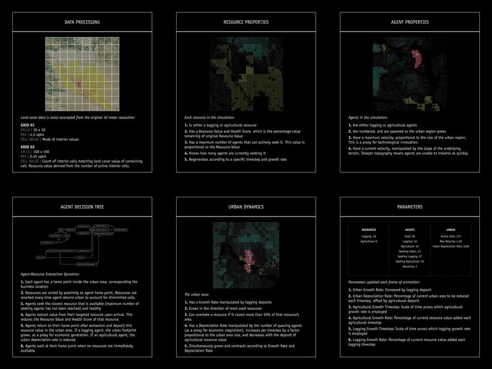
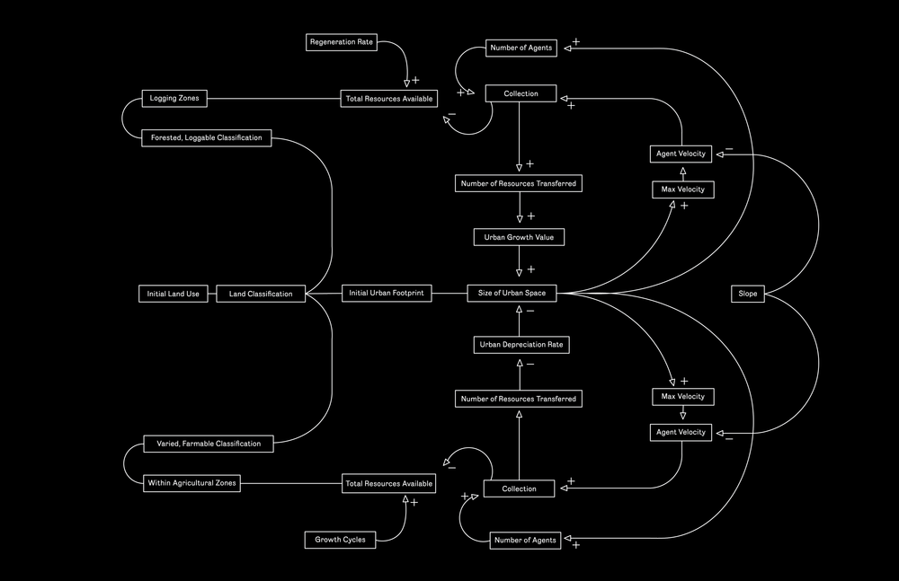
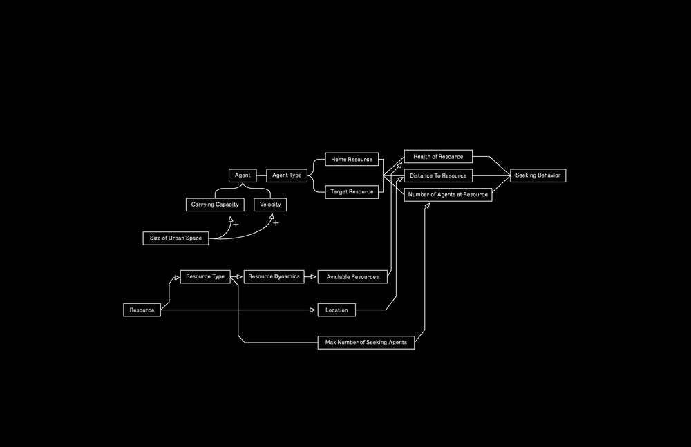

Metabolic Cities
[2017]
Metabolic Cities is a geographic simulation that models how surficial conditions of land, such
as ground classification and slope, engender spatial patterns of extraction, production, and
settlement. In animating potential futures, this agent-based model explores how land
classification shapes our relationship to nature and yields a particular geography of urban
expansion.
Using three regions of Washington State as a case study, we constructed an
intelligence for agricultural, forested, and urban land uses. Agricultural resources represent
crops that sustain a population; logging resources represent physical construction supplies; and
the urban area utilizes these two resources to grow and maintain its spatial footprint, given
particular rates of depreciation and seasonal regrowth.
By modeling how logging and agricultural business locate capital and deplete resources against
real land characteristics, we have attempted to derive a more nuanced understanding of the
upkeep values facing urban populations. Parameterizing this metabolism enables us to reimagine
how such spatial patterns might manifest more optimally and environmentally sensitively.
Agriculture - Yellow
Logging - Green
Urban - Red
-----
Collaborator: Ernest Haines
This project benefits from frameworks provided by Professor Robert Pietrusko in SCI-6349
Mapping II: Geosimulation, Fall 2017.
Triptych: Chehalis [left], Wenatchee [middle], Ellensburg [right]
Simulations with live information panels, in order: Chehalis, Wenatchee, Ellensburg

Simulation processes and rules

Stock and flow diagram representing dynamic resource behavior

Stock and flow diagram representing dynamic agent behavior